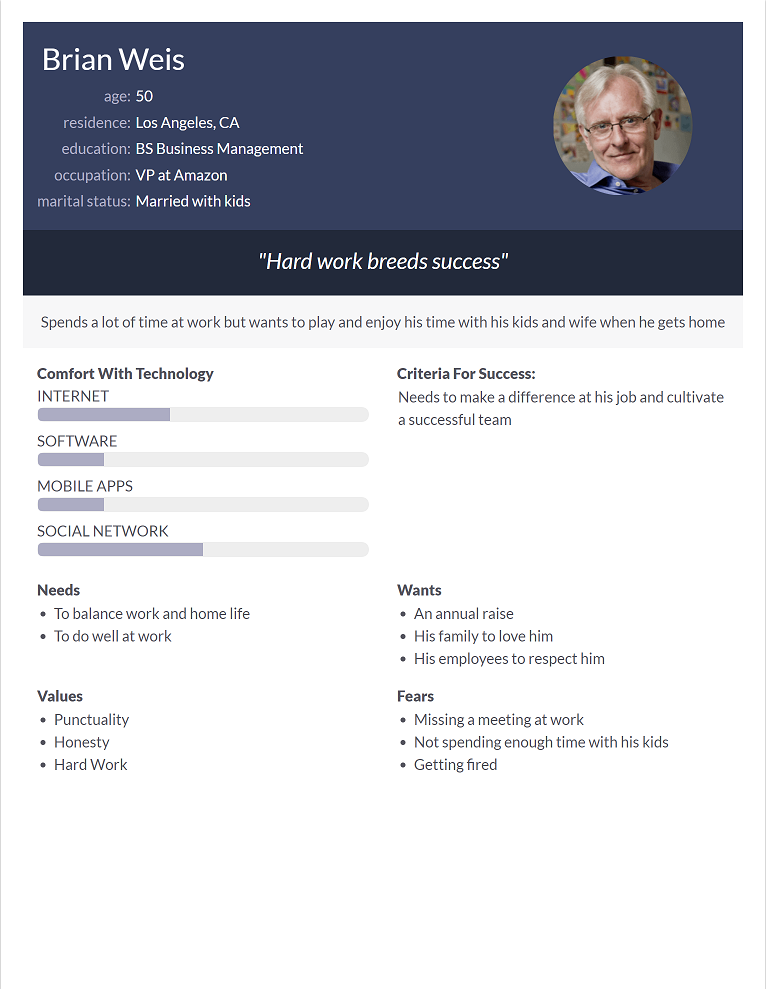
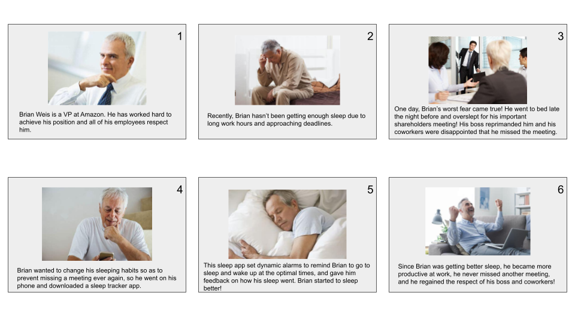
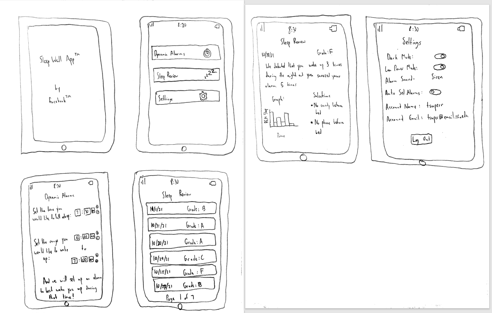

Problem Statement: Sleep Schedule

Many people are waking up feeling sluggish and feel as though they are not getting good, or enough, sleep. Our solution plans to set dynamic alarms that will help wake our users up at the optimal time while helping them get more sleep.
Affinity Diagram: Sleep Schedule

My group and I brainstormed to make an affinity diagram that covers all aspects of our sleep app.
Personas: 5 Personas for Sleep App
Some personas of some types of people who would use our sleep app.
Storyboards: 5 Storyboards for Sleep App
Some scenarios of various people who would need to use our sleep app in their day-to-day lives.
Sketches: 5 Sketches for Sleep App
Rough sketches for what our sleep app might look like.
Paper Prototype for Sleep App

Paper prototype for our sleep app to visualize what it would be like.